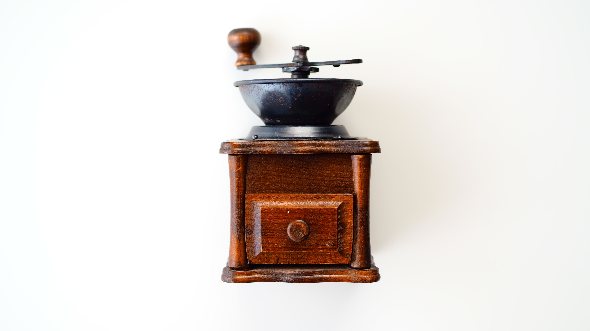
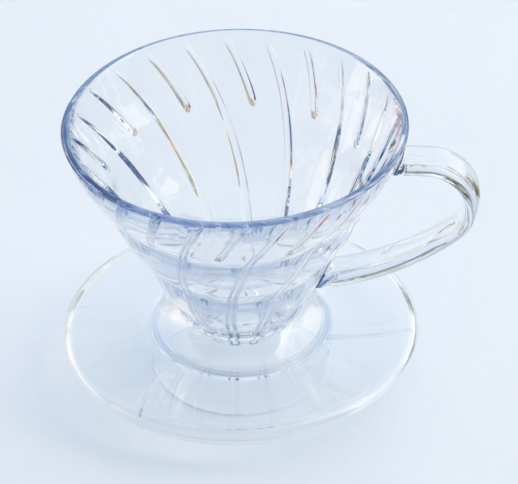
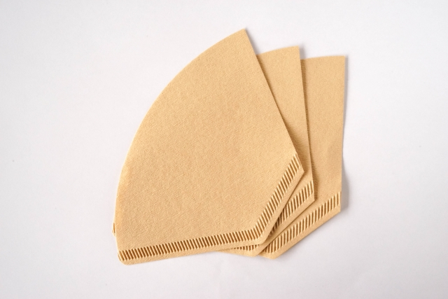
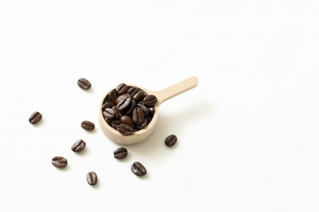
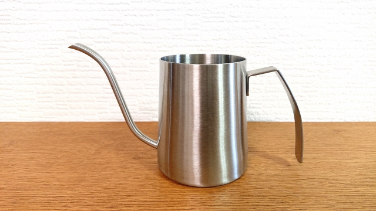
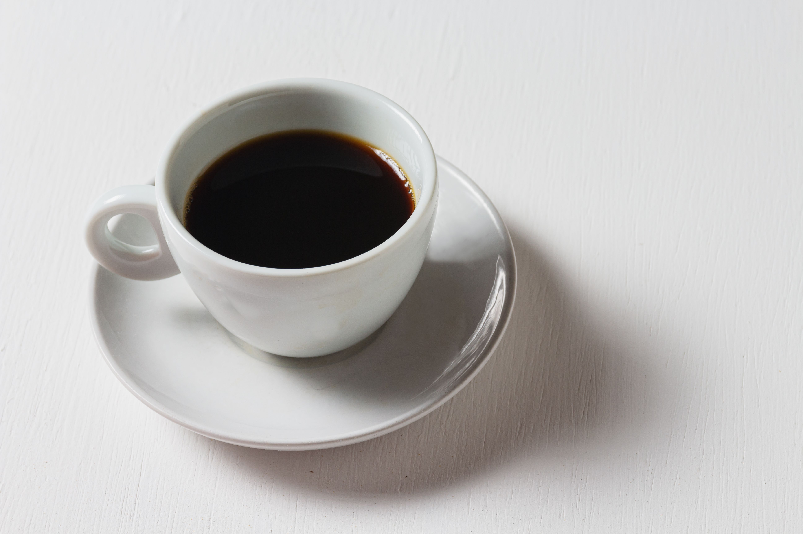

道具

コーヒー豆
コーヒーを淹れるならもちろん必須。
見た目はどれも同じだが、品種で味も香りも変わります。それどころか同じ品種でも農場ごとに違います。
こだわりを見つけるならまずは豆から探しましょう。

コーヒミル
自分で挽くなら必須。
そうでないならお店で挽いてもらいましょう。
ハンドルを回して豆を挽きます。製品によって違いはありますが、豆をどのように挽くかも調整できます。
手動式、電動式はお好みで。

コーヒードリッパー
コーヒーフィルターをセットして、コーヒーを抽出する道具です。
円錐型、台形型と様々な形がありますが、初めは気にしなくても問題ないです。

コーヒーフィルター
挽いた豆を入れる紙です。
ドリッパーの形に合うものを購入しましょう。1~2人用、2~4人用などがあるため、用途に合ったものを購入してください。

コーヒーメジャー
コーヒー豆用の計量カップみたいなものです。一杯あたり1人分という認識で問題はないですが、 メーカーによって違うこともあるそうなので、頭の隅で覚えておきましょう。

ドリップポット
コーヒーを蒸らしたり、抽出のためにお湯を注ぐときに使います。
先端が細いものの方が扱いやすいのでおすすめです。初めからケトルとして使うものと、沸かしたお湯を淹れて使うものがあります。

コーヒーカップ
お好みで買いましょう。サイト作成者は最近、2重ガラスのものがブームです。ホットを淹れても熱くない。アイスで淹れても結露しなかったりで便利。